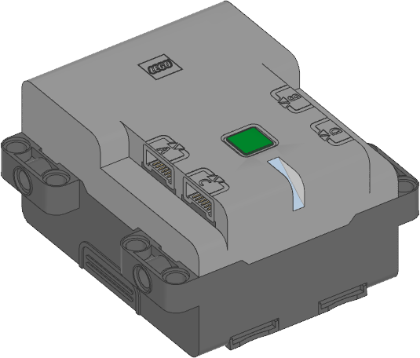

| ❌ | ❌ | ✅ | ❌ | ❌ | ❌ | ❌ |
|---|
Technic Hub

- class TechnicHub(top_side=Axis.Z, front_side=Axis.X)
LEGO® Technicハブ。
ハブの初期化を行います。 任意でハブの上面（ボタンがある方）と前面（ライトがある方）の向きを指定し、 ハブをデザインにどのように配置するか を指定することができます。
Using the hub status light
- light.off()
ライトを消します。
- light.blink(color, durations)
ライトを一定時間、指定した色で点滅させます。
ライトはプログラム実行中、バックグラウンドでずっと点滅し続けます。
このメソッドでは、簡単で便利な点滅パターンを作成できます。 より複雑なパターンを作成するには、代わりに
animate()を使用してください。
- light.animate(colors, interval)
指定された間隔で1つずつ表示される色のシーケンスでライトをアニメーション化します。
アニメーションはバックグラウンドで実行されます。 アニメーションが完了すると最初に戻り、繰り返されます。
Using the IMU
Changed in version 3.6: The methods below now return calibrated data by default. Depending on the method used, this combines data from the accelerometer, gyroscope, with your calibration values. Use
calibrated=Falsewhere applicable to get the raw data you got before.- imu.ready() bool
IMUが使用可能かどうかを確認します。
これは、ロボットが数秒間静止しているときに
Trueになり、デバイスを再較正することができます。 ハブが起動したばかりであったり、10分以上較正の機会がなかったりするとFalseになります。- Returns:
使用可能であれば
True、そうでなければFalse。
- imu.up(calibrated=True) Side
現在ハブのどの面が上を向いているかを確認します。
- Parameters:
calibrated (bool) –
Trueを選択すると、キャリブレーション済みの ジャイロスコープと加速度計のデータを使って上方向を判定します。Falseを選択すると、生の加速度値を使用します。- Returns:
Side.TOP、Side.BOTTOM、Side.LEFT、Side.RIGHT、Side.FRONT、Side.BACKのいずれか。
- imu.tilt(calibrated=True) tuple[int, int]
ピッチ角とロール角を取得します。これは ユーザーが指定した方向 からの相対値です。
回転の順序は、ピッチ-ターン-ロールです。これはロボットのY軸に 沿って正回転し、次にX軸に沿って正回転することに相当します。
- Parameters:
calibrated (bool) –
Trueを選択すると、キャリブレーション済みの ジャイロスコープと加速度計のデータを使って傾きを判定します。Falseを選択すると、生の加速度値を使用します。- Returns:
ピッチ角とロール角を度単位で表したタプル。
- imu.acceleration(axis, calibrated=True) float: mm/s²
- imu.acceleration(calibrated=True) vector: mm/s²
ロボットフレーム における、指定された軸に沿ったデバイスの加速度を取得します。
- imu.angular_velocity(axis, calibrated=True) float: deg/s
- imu.angular_velocity(calibrated=True) vector: deg/s
ロボットフレーム における、指定された軸に沿ったデバイスの角速度を取得します。
- imu.heading() float: deg
ロボットの水平面での角度(方位角)を取得します。 正の値は時計回りを意味します。
プログラム開始時の値は0です。この値はロボットが180度以上回転しても増え続けます。-180度まで折り返すことはありません。
- Returns:
開始方位に対するロボットの方位角。
- imu.reset_heading(angle)
ロボットの方位角をリセットします。
ドライブベースがジャイロを使って走行または位置保持を行っている間は、 このメソッドを呼び出せません。 代わりに
DriveBase.reset()を使用してください。これはロボットを停止させてから、新しい方位角を 設定します。Changed in version 3.6: 走行中の角度リセットは許可されていません。先に停止してください。
- imu.rotation(axis, calibrated=True) float: deg
ロボットフレーム における、指定された軸に沿ったデバイスの回転を取得します。
この値は、ロボットが要求された軸に沿ってのみ回転する場合に便利です。 一般的な3次元モーションの場合は、代わりに
orientation()メソッドを使用します。
- imu.orientation() Matrix
ロボットフレーム における、ロボットの3次元姿勢を取得する。
ロボットの
X軸、Y軸、Z軸を表す回転行列を返します。- Returns:
3x3の回転行列。
- imu.settings(*, angular_velocity_threshold, acceleration_threshold, heading_correction, angular_velocity_bias, angular_velocity_scale, acceleration_correction)
- imu.settings() tuple
IMUの設定を構成します。引数が指定されない場合は、現在の値を 返します。将来のリリースで設定が追加または変更される可能性が あるため、正しい動作を確実にするには各値をキーワード引数で 指定してください。
これらのIMU設定はハブに保存されます。再度変更するまで値は 保持されます。ハブを別のファームウェアバージョンに更新するか、
hub.system.reset_storageメソッドを呼び出すと、値は デフォルト値にリセットされます。angular_velocity_thresholdとacceleration_thresholdは、ハブが静止しているとみなされる条件を定義します。すべての 測定値が1秒間これらのしきい値を下回り続けると、IMUは自分自身を 再キャリブレーションします。周囲の振動が大きい騒がしい場所 （競技会場など）では、しきい値を少し上げることで、ロボットが キャリブレーションする機会を与えられます。設定が期待どおりに 機能していることを確認するには、ロボットが動いているときにstationary()メソッドがFalseを返し、静止しているときにTrueを返すことをテストしてください。ジャイロスコープはハブの回転速度を測定して総角度を推定します。 製造過程のばらつきにより、各ハブは1回転に対して一貫して異なる値を 報告します。たとえば、あるハブは 360 度の回転ごとに常に 357 度を報告するかもしれません。この値は
hub.imu.rotation(-Axis.Z, calibrated=False)で測定でき、heading_correction設定として入力できます。すると、hub.imu.heading()メソッドはそれ以降その値を考慮し、 1回転を正しく360度にスケーリングします。- Parameters:
angular_velocity_threshold (Number, deg/s) – これを下回る 角速度の変動であれば、ハブはキャリブレーションできるほど 静止しているとみなされるというしきい値。 リセット後の値は2 deg/sです。
acceleration_threshold (Number, mm/s²) – これを下回る 加速度の変動であれば、ハブはキャリブレーションできるほど 静止しているとみなされるというしきい値。 リセット後の値は2500 mm/s²です。
heading_correction (Number, deg) – ロボットが1回転したときに 報告される度数。リセット後の値は360度です。これは
angular_velocity_scale設定によるスケーリングに 加えて適用されます。angular_velocity_bias (tuple, deg/s) – 起動直後のx、y、z軸に 沿った角速度測定の初期バイアス。 リセット後の値は(0, 0, 0) deg/sです。
angular_velocity_scale (tuple, deg) – 製造差異を考慮するための x、y、z回転のスケール調整。リセット後の値は (360, 360, 360) deg/sです。正しい値は hub.imu.rotation(Axis.X, calibrated=False) を使い、 各軸について繰り返すことで得られます。
acceleration_correction (tuple, mm/s²) – 製造差異を考慮する ためのx、y、zの両方向における重力の大きさのスケール調整。 リセット後の値は (9806.65, -9806.65, 9806.65, -9806.65, 9806.65, -9806.65) mm/s²です。 正しい値は hub.imu.acceleration(Axis.X, calibrated=False) を使い、 すべての軸の両方向について繰り返すことで得られます。
Using the battery
- battery.voltage() int: mV
バッテリーの電圧を取得します。
- Returns:
バッテリーの電圧。
- battery.current() int: mA
バッテリーから供給される電流を取得します。
- Returns:
バッテリーの電流。
Button and system control
- system.info() dict
ハブに関する情報を、以下のキーを持つ辞書として取得します。
"name": ハブ名。Bluetooth経由で接続するときに表示される 名前です。"reset_reason": ハブが（再）起動した理由。ハブが前回正常に 電源オフされていた場合は0です。ファームウェア更新後など、 ハブが自動的に再起動した場合は1です。ハブが前回 ウォッチドッグタイムアウトによってクラッシュした場合は2で、 これはファームウェアの問題を示します。"host_connected_ble": ハブがBluetooth経由でコンピューター、 タブレット、スマートフォンのいずれかに接続されている場合はTrue、それ以外はFalse。"host_connected_usb": ハブがUSB経由でコンピューターに接続され、 アプリでアクティブになっている場合はTrue。 それ以外はFalse。"program_start_type": ハブの電源投入時にプログラムが自動的に 開始された場合は1。ハブのボタンでプログラムが開始された 場合は2。接続したコンピューターからプログラムが開始された 場合は3。“program_id”: 現在実行中のプログラムの（スロット）番号。
- Returns:
システム情報を含む辞書。
Changed in version 3.6: 名前とリセット理由は、以前は個別のメソッドとして利用できました。 現在は
info辞書に含まれています。これらのメソッドは 後方互換性のために引き続き利用できます。
- system.set_stop_button(button)
実行中のスクリプトを停止するボタンを設定します。
通常、中央のボタンは実行中のスクリプトを停止するために使用されます。 この仕様を変更または無効にして、ボタンを他の目的に使用することができます。
- Parameters:
button (Button) –
Button.CENTERなどのボタン、またはボタンのタプルを指定します。Noneを選択すると、ボタンを無効にします。 無効にした場合は中央のボタンを3秒間長押しして、Hubの電源をオフにしてプログラムを停止することができます。
- system.storage(offset, write)
- system.storage(offset, read) bytes
永続ストレージに対してバイナリデータの読み書きを行います。
次回プログラムを実行したときにも使えるデータを保存できます。
ハブを正常にオフにすると、データはフラッシュメモリに保存されます。 ハブが 動作している間に バッテリーを取り外した場合は保存されません。
一度保存されたデータは、バッテリーを取り外した後でも利用できます。
- Parameters:
- Returns:
読み取りの場合は読み取ったバイト列、それ以外の場合は
None。- Raises:
ValueError – 許可された範囲外のデータを読み書きしようとした場合。
You can store up to 128 bytes of data on this hub. The data is cleared when you update the Pybricks firmware or if you restore the original firmware.
- system.reset_storage()
すべてのユーザー設定をデフォルト値にリセットし、ユーザーのプログラムを消去します。
- system.shutdown()
プログラムを停止し、ハブをシャットダウンします。
Status light examples
Turning the light on and off
from pybricks.hubs import TechnicHub
from pybricks.parameters import Color
from pybricks.tools import wait
# ハブを初期化する。
hub = TechnicHub()
# ライトの点灯と消灯を5回繰り返す。
for i in range(5):
hub.light.on(Color.RED)
wait(1000)
hub.light.off()
wait(500)
Changing brightness and using custom colors
from pybricks.hubs import TechnicHub
from pybricks.parameters import Color
from pybricks.tools import wait
# ハブを初期化する。
hub = TechnicHub()
# 明るさ30%で色を表示する。
hub.light.on(Color.RED * 0.3)
wait(2000)
# 自分で作った色を使う。
hub.light.on(Color(h=30, s=100, v=50))
wait(2000)
# すべての色を順に試す。
for hue in range(360):
hub.light.on(Color(hue))
wait(10)
Making the light blink
from pybricks.hubs import TechnicHub
from pybricks.parameters import Color
from pybricks.tools import wait
# ハブを初期化
hub = TechnicHub()
# 赤の点灯と消灯を繰り返し続ける。
hub.light.blink(Color.RED, [500, 500])
wait(10000)
# 緑でゆっくり、つづいて速く点滅し続ける。
hub.light.blink(Color.GREEN, [500, 500, 50, 900])
wait(10000)
Creating light animations
from pybricks.hubs import TechnicHub
from pybricks.parameters import Color
from pybricks.tools import wait
from umath import pi, sin
# ハブを初期化する。
hub = TechnicHub()
# 複数色のアニメーションを作る。
hub.light.animate([Color.RED, Color.GREEN, Color.NONE], interval=500)
wait(10000)
# サイン波パターンで赤色を明滅させる。
hub.light.animate([Color.RED * (0.5 * sin(i / 15 * pi) + 0.5) for i in range(30)], 40)
wait(10000)
# 虹色を順番に切り替える。
hub.light.animate([Color(h=i * 8) for i in range(45)], interval=40)
wait(10000)
IMU examples
Testing which way is up
from pybricks.hubs import TechnicHub
from pybricks.parameters import Color, Side
from pybricks.tools import wait
# ハブを初期化する。
hub = TechnicHub()
# 面ごとの色を辞書で定義する。
SIDE_COLORS = {
Side.TOP: Color.RED,
Side.BOTTOM: Color.BLUE,
Side.LEFT: Color.GREEN,
Side.RIGHT: Color.YELLOW,
Side.FRONT: Color.MAGENTA,
Side.BACK: Color.BLACK,
}
# 上を向いている面に応じて色を更新し続ける。
while True:
# ハブのどの面が上を向いているか調べる。
up_side = hub.imu.up()
# 検出した面に応じて色を変える。
hub.light.on(SIDE_COLORS[up_side])
# 結果もprintする。
print(up_side)
wait(50)
Reading the tilt value
from pybricks.hubs import TechnicHub
from pybricks.tools import wait
# ハブを初期化する。
hub = TechnicHub()
while True:
# 傾きの値を読み取る。
pitch, roll = hub.imu.tilt()
# 結果をprintする。
print(pitch, roll)
wait(200)
Using a custom hub orientation
from pybricks.hubs import TechnicHub
from pybricks.parameters import Axis
from pybricks.tools import wait
# ハブを初期化。ここでは、ハブが上面を前に、
# 正面を右に向けて取り付けられていると指定する。
# 例えば51515セットのBLASTでは、ハブはこの向きで取り付けられている。
hub = TechnicHub(top_side=Axis.X, front_side=-Axis.Y)
while True:
# 傾きの値を読み取る。BLASTが直立しているとき値は0になる。
# 前に傾けるとピッチが正、右に傾けるとロールが正になる。
pitch, roll = hub.imu.tilt()
# 結果をprintする。
print(pitch, roll)
wait(200)
Reading acceleration and angular velocity vectors
from pybricks.hubs import TechnicHub
from pybricks.tools import wait
# ハブを初期化する。
hub = TechnicHub()
# 加速度ベクトルをg単位で取得する。
print(hub.imu.acceleration() / 9810)
# 角速度ベクトルを取得する。
print(hub.imu.angular_velocity())
# 出力したものを見られるよう少し待つ
wait(5000)
Reading acceleration and angular velocity on one axis
from pybricks.hubs import TechnicHub
from pybricks.parameters import Axis
from pybricks.tools import wait
# ハブを初期化する。
hub = TechnicHub()
# 1軸分の加速度または角速度を取得する。
# 値が1つだけ必要なら、こちらのほうがメモリ効率が良い。
while True:
# 前方向の加速度を読み取る。
forward_acceleration = hub.imu.acceleration(Axis.X)
# ヨーレートを読み取る。
yaw_rate = hub.imu.angular_velocity(Axis.Z)
# ヨーレートをprintする。
print(yaw_rate)
wait(100)